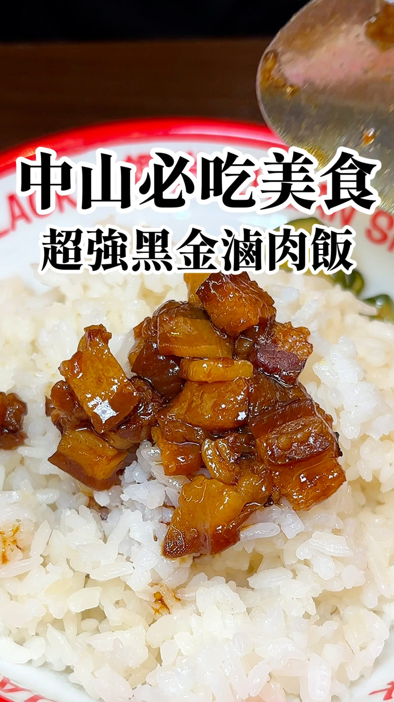

Foodcamz Facebook Reel｜饌堂黑金滷肉飯中山店：赤峰街人氣滷肉飯與紅糟肉飯備忘

一句話摘要
這支 Reel 推薦赤峰街「饌堂黑金滷肉飯 中山店」：主打鹹香滷汁、肥而不膩的黑金滷肉飯，以及紅糟肉 + 滷肉飯的組合，適合放進中山站/赤峰街逛街動線的快速用餐名單。
Facebook 公開資訊
- 作者：Foodcamz。
- Canonical Reel：https://www.facebook.com/reel/1646700823782724
- 擷取時可見：約 2,621 次觀看、169 個心情、5 則留言、19 次分享。
- 背景音樂：Jakob Welik〈La Vie Élégante〉。
- 登入牆限制：完整影片播放與逐格內容未完整擷取；本文保存公開 OpenGraph / oEmbed metadata、封面與可見文案。
貼文重點
Foodcamz 文案描述：
- 中山發現超人氣黑金滷肉飯，用餐時間人潮沒停過。
- 滷肉肥而不膩，滷汁鹹香夠味。
- 推薦紅糟肉滷肉飯：酥香紅糟肉配黑金滷肉。
- 店名：饌堂黑金滷肉飯 中山店。
- 價格：黑金滷肉飯小碗 45 元、大碗 55 元；紅糟肉滷肉飯 95 元。
- 時間：12:00–20:00。
- 地址：103 台北市大同區赤峰街 33 巷 12 號 1 樓。
封面 OCR / 視覺描述
封面文字：
- 「中山必吃美食」
- 「超強黑金滷肉飯」
畫面是白飯上淋油亮滷肉塊與滷汁，旁邊有湯匙，視覺上偏重滷汁光澤與肉塊肥瘦感。
外部查核
### 1000CC 食記
1000CC 去旅行〈中山站巷弄美食「饌堂」超強黑金滷肉飯〉列出：
- 店名：饌堂黑金滷肉飯 中山店。
- 營業時間：每天 12:00–20:00。
- 地址：台北市大同區光能里赤峰街 33 巷 12 號 1 樓。
- 文中提到黑金滷肉飯、冰燻豬腳飯、紅蔥雞絲飯、梅干滷肉飯、雞魯飯與小菜湯品等。
### Uber Eats / 外送菜單
Uber Eats 上有「饌堂 黑金滷肉飯」店家與菜單資訊，可佐證它是以滷肉飯、小菜與外送餐點為主的店型。不過外送平台價格與品項可能和現場不同。
為什麼值得收藏
- 赤峰街/中山站一帶常見咖啡、甜點、選物與小吃混搭，這家可作為正餐或逛街中段補能量。
- 黑金滷肉飯小碗價格低，適合「還想吃其他店」的分食路線。
- 紅糟肉滷肉飯可作為第一次點餐的招牌組合。
建議點法
- 初訪：黑金滷肉飯小碗或大碗，看滷汁口味是否合拍。
- 想吃飽：紅糟肉滷肉飯。
- 多人：滷肉飯 + 小菜/湯品分食。
- 中山逛街路線：可接赤峰街、雙連、南西商圈咖啡甜點。
風險與提醒
- Reel 是短影音推薦，偏主觀口味描述，不代表所有人都會喜歡。
- 營業時間、價格、排隊、售完與菜單可能變動。
- 地址在大同區赤峰街，但社群常以「中山」稱呼商圈；導航時請用完整地址。
- 出發前建議查 Google Maps、店家社群或外送平台即時狀態。
來源
- Facebook share URL：https://www.facebook.com/share/r/1J5qA68sVr/?mibextid=wwXIfr
- Facebook Reel canonical：https://www.facebook.com/reel/1646700823782724
- Foodcamz Reel OpenGraph / oEmbed metadata。
- 1000CC 去旅行｜中山站巷弄美食「饌堂」超強黑金滷肉飯：https://travelearth195.com/justda-food/
- Uber Eats｜饌堂 黑金滷肉飯：https://www.ubereats.com/tw/store/%E9%A5%8C%E5%A0%82-%E9%BB%91%E9%87%91%E6%BB%B7%E8%82%89%E9%A3%AF/bDFIMtk8W0C5EEZUI_25Lw